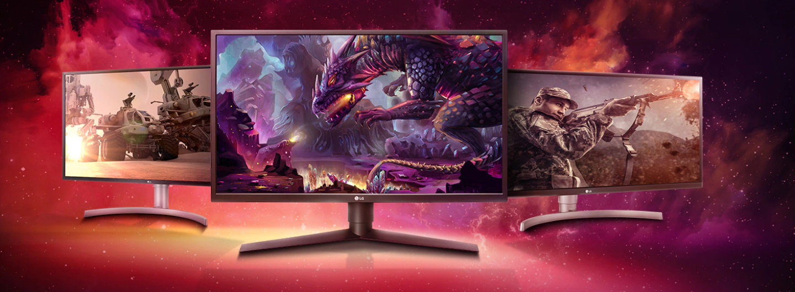
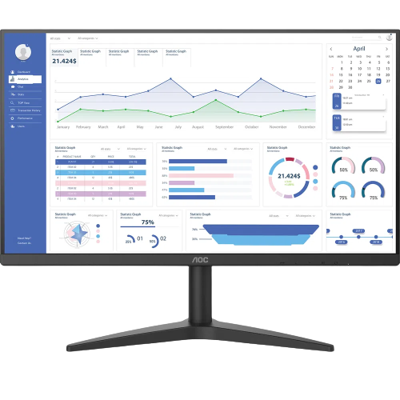
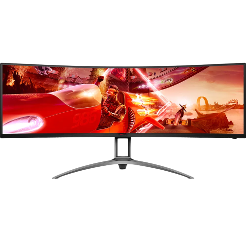
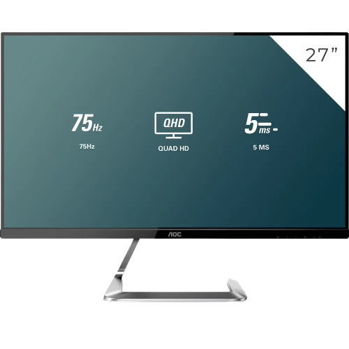

HOME
PRODUTOS
PROCESSADORES
MONITORES
PLACA-MÃE
CONTATO
SOBRE NÓS
quiet_time_active
quiet_time


Com um design Slim elegante e bordas ultrafinas, o monitor AOC 27B1HM conta com 75Hz de taxa de atualização, imagens nítidas com o Painel VA e Adaptive-Sync e tecnologias que protegem a sua saúde ocular, para você ter ótimos recursos em um só lugar.

O tempo de resposta de 1ms proporciona suavidade nos movimentos, reduzindo os efeitos fantasmas e oferecendo uma experiência de jogo aprimorada.

O painel IPS oferece imagens extremamente nítidas com cores vivas e precisas, em um amplo ângulo de visão de 178º/178º.